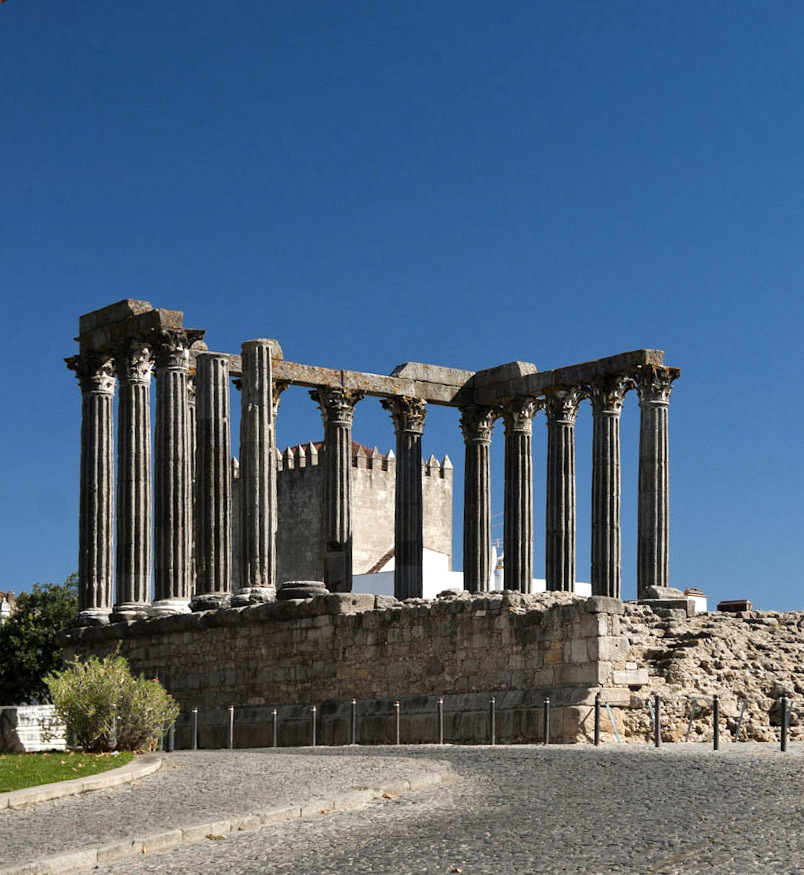
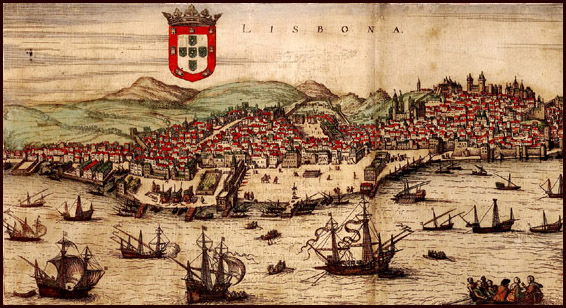
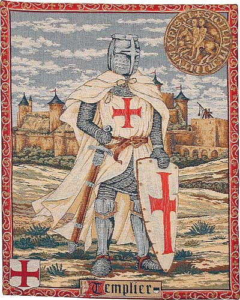
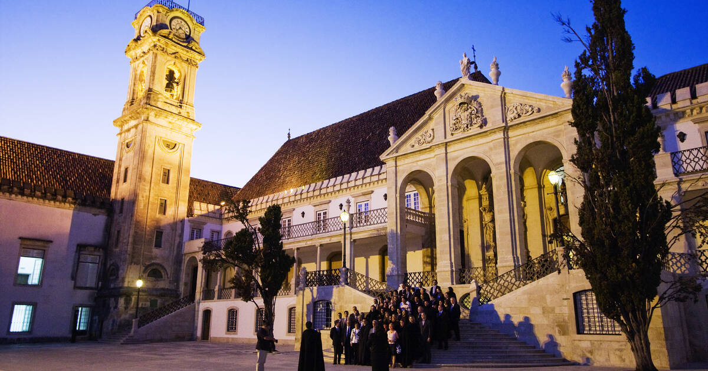
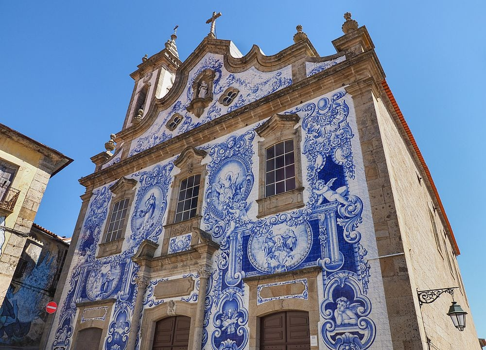

Foundations
Birthplace of the Nation
Visit Guimarães, the "Cradle City," where Afonso Henriques was proclaimed the first King of Portugal in 1139. Its medieval castle remains a symbol of national identity.

Medieval Castles
The Temple of Evora
Explore one of the best-preserved Roman structures in the Iberian Peninsula. Built in the 1st century, this Corinthian temple stands as a testament to Portugal’s ancient Roman heritage.

Maritime Glory
The Age of Discovery
Stand where the caravels departed. The Belém Tower and Padrão dos Descobrimentos in Lisbon honor the explorers like Vasco da Gama who linked the continents by sea.

Knighthood
The Templar Legacy
Visit the Convent of Christ in Tomar, the former headquarters of the Knights Templar. Its round church (Charola) was modeled after the Holy Sepulchre in Jerusalem.

Academic History
Coimbra University
Walk through one of the oldest continuously operating universities in the world (est. 1290). Its Joanina Library is a baroque masterpiece filled with ancient knowledge.

Living History
The Azulejo Tradition
Learn the history of Portugal’s iconic blue tiles. Introduced by the Moors and perfected by Portuguese artisans, these tiles have "narrated" history on walls for five centuries.